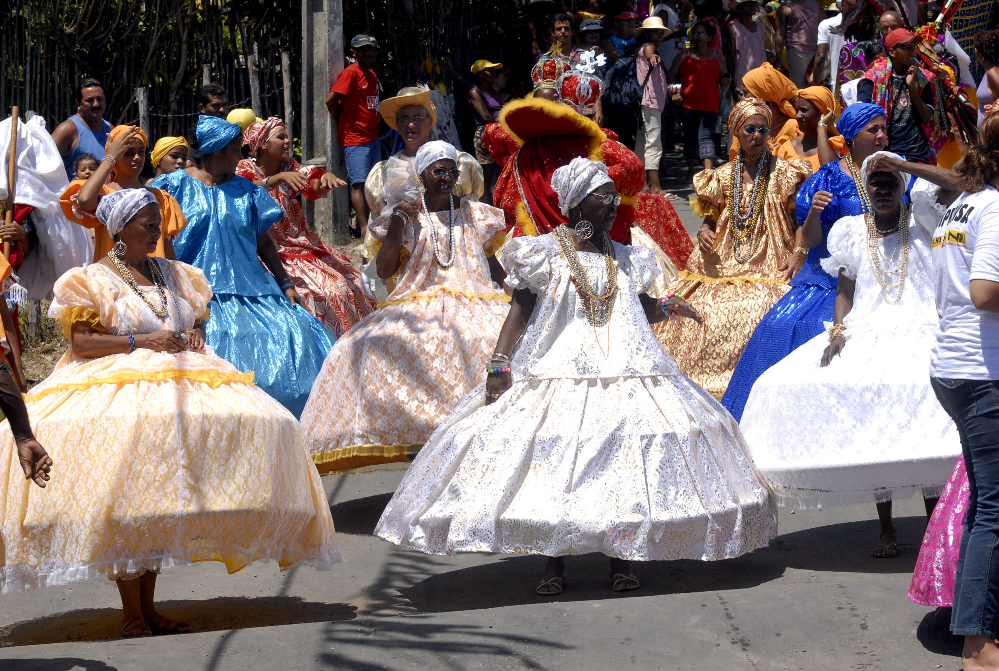
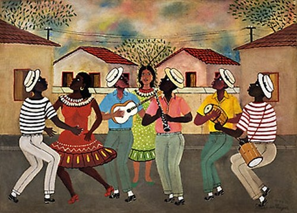

A cultura afro‑brasileira é uma fusão das tradições africanas com elementos indígenas e europeus, resultando em uma identidade única e rica. Ela se manifesta de várias formas, como na música (samba, funk), nas danças (capoeira, samba de roda), na religião (candomblé, umbanda) e na culinária (feijoada, acarajé). Essas expressões culturais são fundamentais para a resistência e preservação da história negra no Brasil. Refletir sobre essa cultura é essencial para combater o racismo e reconhecer a importância das contribuições do povo negro para a formação da identidade brasileira.
A Influência do Samba

O samba tem raízes na cultura afro‑brasileira, originado nas comunidades negras do Rio de Janeiro no início do século XX, misturando influências africanas, indígenas e portuguesas. Com ritmos sincopados e instrumentos como surdo, cuíca e pandeiro, o samba se popularizou e se tornou símbolo nacional, expressando alegria, resistência e identidade.
A Capoeira como Resistência

A Capoeira, classificada pela UNESCO como Patrimônio Cultural Imaterial da Humanidade, é mais do que uma luta ou uma dança; é uma manifestação cultural que carrega a história de resistência dos escravizados. Desenvolvida no Brasil Colônia, era uma forma disfarçada de treinamento de combate. Seus movimentos, acompanhados pelo berimbau e outros instrumentos, simbolizam a liberdade e a criatividade do povo negro.